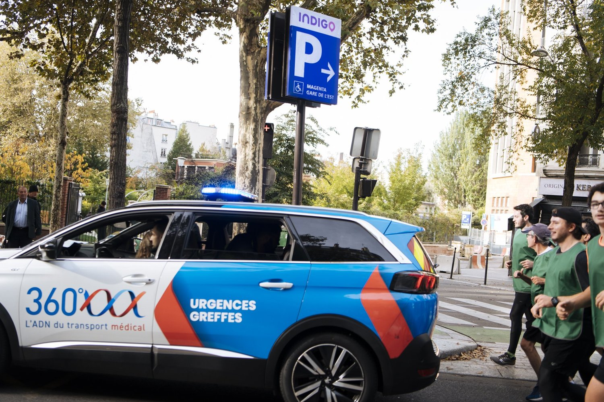

🏃
Promouvoir l'activité physique et sportive
Pour les candidats à la greffe et les greffés. Nous faisons de l'activité physique un axe majeur de notre action, quels que soient l'organe, l'âge ou le niveau de pratique.
En savoir plus →Pour les candidats à la greffe et les greffés. Nous faisons de l'activité physique un axe majeur de notre action, quels que soient l'organe, l'âge ou le niveau de pratique.
En savoir plus →Des courses solidaires dans toute la France pour sensibiliser au don d'organes et de tissus, en collaboration avec les équipes hospitalières.
Voir les courses →En transplantation, au service des patients : intelligence artificielle, bénéfices de l'activité physique et xénogreffe.
Découvrir les projets →